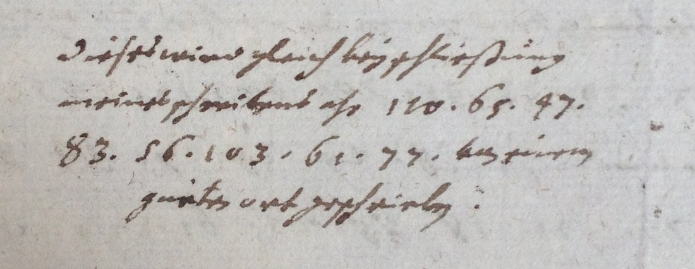

At a glanceNot solved · text not obtained
- The letters
- Johann Joachim von Rusdorff to Axel Oxenstierna, The Hague, 1628: three letters, at least one in German.
- Where
- Riksarkivet, Stockholm, Oxenstierna collection (volume E 701, Ser. B); DECODE R4333–R4335, “Riksarkivet_Rusdorff_Oxenstierna_1628-1” to “-3”, with no decipherment recorded. Formerly part of catalogue item 207.
- The cipher
- One- to three-digit numbers (8 to 107) separated by dots, set among clear words. Not the cipher of Rusdorff’s London letters of 1625. Whether the three letters share one key is not known.
- How it was tried
- Not yet: the letters were opened on 21 September 2026, described and set aside.
- Still open
- Everything: transcription, Rusdorf’s own copybook of these letters in Kassel, the printed Oxenstierna correspondence, the key records of the same archive.
These letters were filed on this site until 14 October 2026 with nine other Riksarkivet records of catalogue item 207. They are different ciphers, each with its own page: the archbishop of Bremen’s letters of 1631 (deciphered), R4282 (deciphered by George Lasry), R4284, R4306 (deciphered in part by George Lasry) and the E 708 letters of 1633.
Two more records first filed here, R4336 and R4337, are Rusdorff’s letters from London of February 1625 in a different cipher, with their own page: George Lasry recovered their key on 21 October 2026. That key does not fit these three: R4333 uses numbers from 8 to 107, and the 1625 table runs from 16 to 87 with codes from 187.
01The letters

Rusdorff, the Elector Palatine’s envoy, wrote from The Hague. DECODE has the year 1628 and nothing else: no sender, recipient or language. Its symbol set is “Numerical” for R4333 and “Alphabet” for R4334 and R4335, which may mean a second system or only a different cataloguer. The archive’s own description says many of them carry notes that the cipher was never worked out.
02What remains
- All the cipher passages of the three letters. They have not been transcribed.
- To do: transcribe them; look for glosses; ask the Universitätsbibliothek Kassel about the third volume of Rusdorf’s papers, which Kröger (1876) describes as his correspondence with Oxenstierna from 1624 to 1628, unprinted; search the printed correspondence (Rikskanslern Axel Oxenstiernas skrifter och brefvexling, series II) and Rusdorff’s own printed papers; try the key records of the Chifferklaver boxes.
03Sources
- Riksarkivet, Stockholm: DECODE R4333, R4334, R4335.
- Kröger, Johann von Rusdorf, kurpfälzischer Gesandter und Staatsmann (1876), pp. 9–10: Rusdorf’s papers at Kassel.
Notes: targets/rusdorff1628/.
Cite this page
Daniel Bourdeau, “Rusdorff to Oxenstierna, 1628”, Cyphersolver, posted 15 October 2026, updated 21 October 2026, https://cyphersolver.com/rusdorff1628.html.